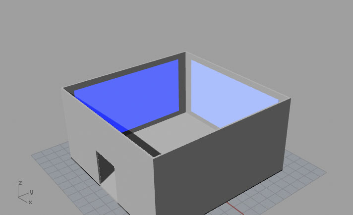

SOPH is a company created to act as a container for Sebastian Ruiz’s collection: Con Nuestros Propios Esfuerzo.
An interdisciplinary fashion studio located in the industrial district of Minneapolis, SOPH’s in house brand produces lines that “serve as prototypes to fundamental needs of protection, survival, and overall as an aggressive resistance to the disposable mindset of consumerism,” Along with their experimental line, SOPH also maintains an inventory of cheap basics, tailored with utility and optimal functionality in mind. Utilizing their warehouse space for production and as a public gallery/venue, the company also relies on pop-up shops in short-term lease, nondescript office spaces around the city to serve consumer needs.